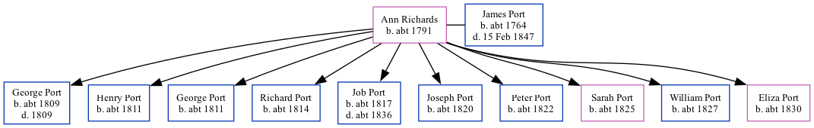

Ann Richards, the wife of James Port (the 4 times great-grandfather of Nigel Horne), was born in Kent, England c. 17911 and married James (with whom she had 10 children: George, Henry, George, Richard, Job, Joseph, Peter, Sarah, William and Eliza) in Blean, Kent, England. In 1841, she lived in Herne, Kent, England1.
1841 England Census Online publication - Provo, UT, USA: The Generations Network, Inc., 2006.Original data - Census Returns of England and Wales, 1841. Kew, Surrey, England: The National Archives of the UK (TNA): Public Record Office (PRO), 1841. Data imaged from the National (Age: 50)
Family Tree

Map
Generated by Ged2Site. Last updated on Apr 1, 2025